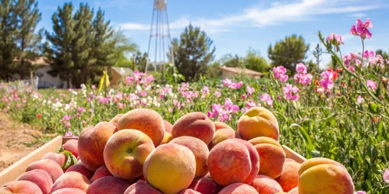
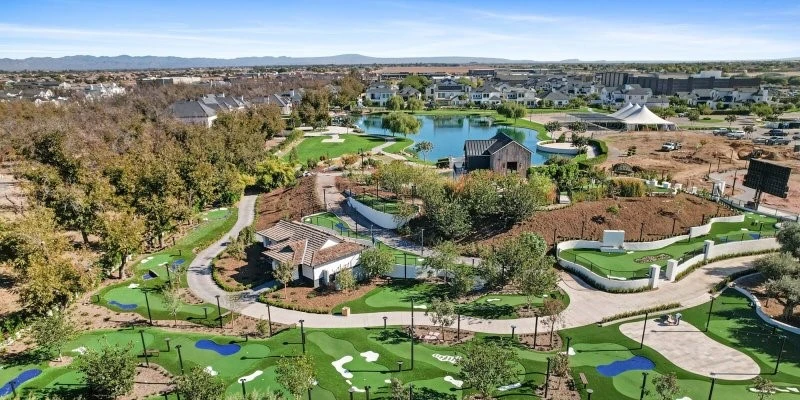
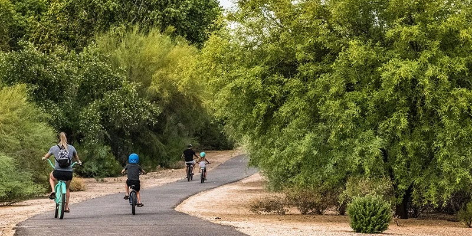
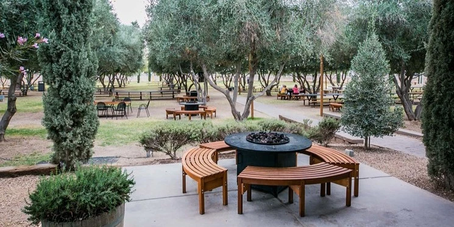
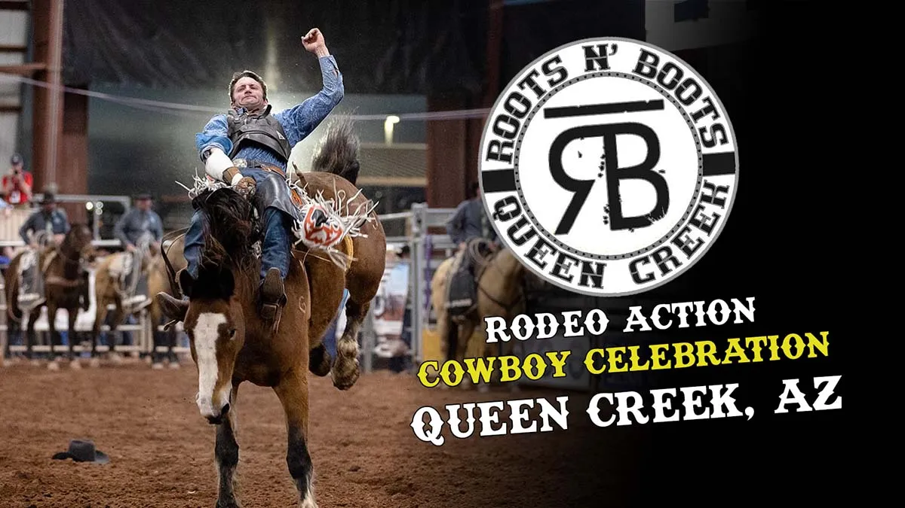
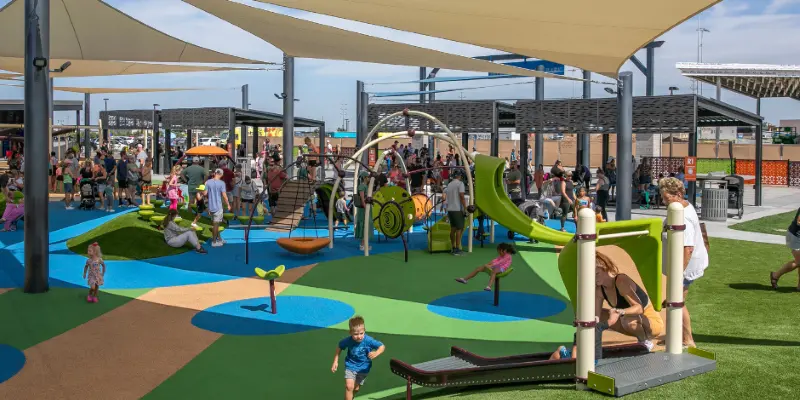
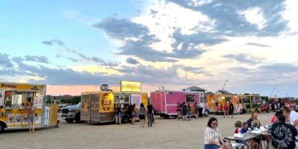
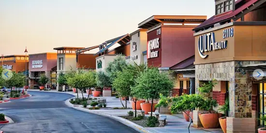
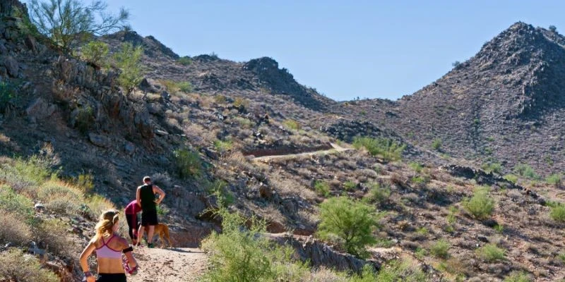

One of the fastest-growing cities in the United States, Queen Creek retains its quaint, small-town feel - inherent in its farming and ranching roots - while continuing to welcome residents and businesses.
From shopping to entertainment, our town has a variety of things to offer! Enjoy your stay!

Schnepf Farms Peach Festival in May

Pecan Creek Entertainment Center Mini Golf

Queen Creek Wash Trail

Queen Creek Olive Mill Outdoor Patio Seating

Roots and Boots Rodeo

Frontier Family Park Playground

Weekly Friday Food Truck Festival

Queen Creek Marketplace Shopping

San Tan Mountain Regional Park